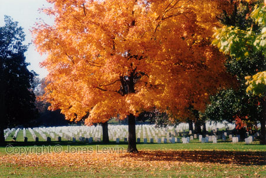

|
USA, Washington DC, 1999-08 The capital of USA. It's well worth a tour in
the capital.
You
need also to see the Arlington Cemetery. The holiest place in the US
according to the sign. Thousands and thousands of tombstones, perfectly
aligned. You can walk in the Graveyard for one hour, and then turn back.
Quite big, isn't it? Perhaps you don't want to walk to all the places, like
JFK memorial, the tomb of the unknown soldier, and all the other graves.
Then you might want to take the bus-tour.
Washington
also has it's own J. Edgar Hoover FBI building. But if you want to see just
any FBI Building, you should go to New York instead. The FBI in Washington
is smaller, but still something to see when in Washington.
When
you are in Washington you probably want to check out Pentagon.
It really surprised me how large that building is. Very dull looking, so you
could easily drive past the building, without knowing what you just went by.
Vietnam
Veterans Memorial.
Make
sure you're not hungry when going to the city. I didn't find any place to
eat in the city. I might not have been looking hard enough, but I did not
find any place to eat for 2 hours. Not even any fast food place. Every city
are full of fast food places, except Washington.
Lincon
memorial and the reflecting lake are nice places to visit. I have no idea
why they built this, and why they chose a lake like this. But is sure is
different.
Lincon memorial and the reflecting lake are located between the White house
and the Vietnam Memorial. As you see, the Vietnam Memorial wall is very big.
So many names on the wall. This is the 2nd place you should visit in
Washington, next to Arlington. If you have the possibility, it's best viewed
after sundown. Not as crowded as during the day, and the wall looks more
spectacular.
The Washington monument, is lit during the night, and you can see it from
far away. I don't know why this is there, do you?
You
can of course see the White House. This is the only good angle for you go
view the White House in. Most of the other viewing angles are obstructed by
trees. If you want to take a tour of White House, you have to be outside
around 06:00 to get any tickets. I didn't feel like going there that early,
so I was satisfied with this view.
|